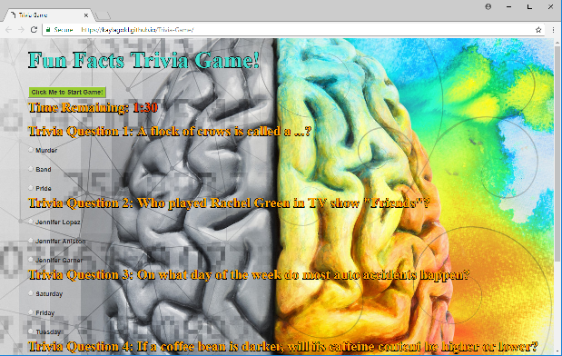
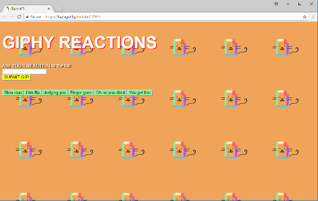
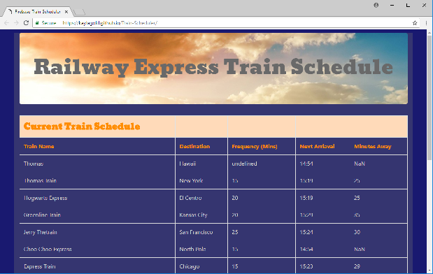
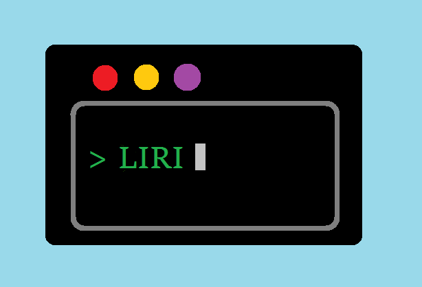

Portfolio

WOZ Word-Guess-Game
A Wizard of Oz themed Word-Guess-Game that's similar to Hangman.The app randomly picks a letter, and
the user has to guess which letter the app chose. The player is trying to guess the entire randomly
chosen word that's associated with the theme. When the player wins, the Wins counter will increase
and the game will start over. When the player loses, the Losses counter will increase and the game
will restart. The player's guesses and number of guesses remaining are displayed.
Technologies: JavaScript to manipulate the HTML & styled with CSS.

Fun-Facts Trivia Game
The Fun-Facts Trivia Game is based on a multiple choice form with random fun facts. The player has a
limited amount of time (1 minute and 30 seconds) to finish the quiz. The game ends when the timer
runs out and/or when the player submits their answers. When the game is over, the page will reveal
the number of questions the player answered correctly and incorrectly. The player can only select
one answer per question.
Technologies: JavaScript for the logic and jQuery to manipulate HTML. Styled with CSS.

Giftastic Giphy Reactions
This app utilizes the GIPHY API to make a dynamic web page that populates with GIFs of your choice. The user adds their GIF
reaction into the text box. A button will populate and join the previously created buttons on the
screen. When the user clicks the GIF button, the page grabs 10 static, non-animated GIF images from
the GIPHY API and places them on the page. When the user clicks one of the still GIPHY images, the
GIF will animate. If the user clicks the GIF again, it will stop playing. Under each GIF, a rating
is displayed for the user.
Technologies: GIPHY API, JavaScript and jQuery to change the HTML of the site. Styled with CSS.

Train-Scheduler
This train-scheduler app incorporates Firebase to host arrival and departure data. The app retrieves and manipulates the
information with Moment.js. The site will provide up-to-date information about various trains, their
arrival times, and how many minutes remain until they arrive at their station.
Technologies: Firebase, JavaScript, Moment.js and jQuery to change the HTML of the site. Styled with
CSS.

LIRI-Bot
LIRI-Bot is a command line node app that takes in parameters and gives you back data. This app is similar to iPhone's SIRI.
The difference is that SIRI is a Speech Interpretation and Recognition Interface, and LIRI is a Language
Interpretation and Recognition Interface.
Technologies: Node npm packages, Node.js, and JavaScript.